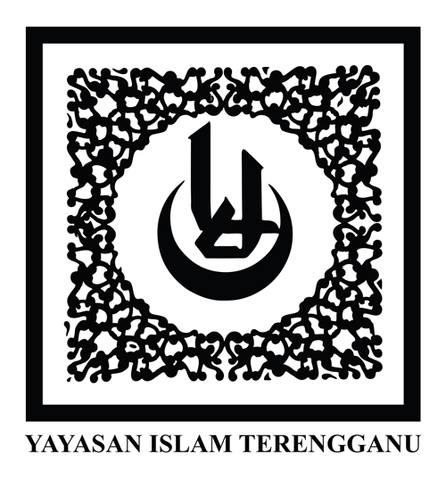
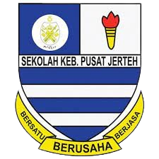
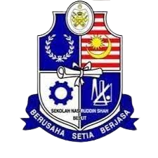

My Academic Background
This is my academic journey, starting from the year 2008 until now.
 |
TADIKA YAYASAN ISLAM TERENGGANU KG RAJA, BESUT
TYIT is my first school, returning to Terengganu after several years in Johor. I joined Class 6 Intelek at this special kindergarten. The atmosphere was lively, with caring teachers, cute friends, and engaging activities. The teachers made English classes interesting, using innovative methods to bring the language to life. The overall environment was cheerful, fostering both academic and social development. Reflecting on my time there, I'm grateful for the valuable lessons and fond memories that laid a solid foundation for my education. READ MORE |
|---|---|
| SK PUSAT JERTEH (SEPUTEH) BESUT, TERENGGANU
I started my primary school at SK Pusat Jerteh in 2009 and completed it in 2014.During my time, I served as a library prefect, which deepened my love for books and organizational skills. The pivotal moment came when I entered Year 4, leading to an improvement in my academic performance throughout Years 4 to 6. The school provided a holistic education, emphasizing both academic success and character development, shaping my foundation for future endeavors. READ MORE |
 |
| SMA ITTIFAKIAH (SeMAI) JERTEH, TERENGGANU
Embarking on my high school journey at SMA Ittifakiah, also known as SeMAI, in 2015, I completed my education in 2019. In my senior years, I specialized in arts and business, enjoying a well-rounded educational experience. During my final year, I served as a peer mentor, enhancing my leadership skills and fostering a sense of camaraderie. Engaging in various activities such as camping and school programs enriched my SeMAI experience, providing valuable life skills. Grateful for the transformative experiences and lasting memories, SeMAI became more than a school—it became a second home. READ MORE |
|
| SMK NASIRUDDIN SHAH (SEMNASH) ALOR LINTANG, KG RAJA
After finishing high school at SMA Ittifakiah, I chose to continue my education at Nasiruddin Shah Vocational School from 2020 to 2022, specializing in arts and geography for pre-university Form 6. During this time, I actively engaged in various co-curricular activities, holding leadership positions in clubs, sports teams, and uniformed units. My experience at Nasiruddin Shah was not only academically enriching but also contributed to my personal growth. I balanced artistic pursuits with geographical studies, gaining a well-rounded education beyond the classroom. Grateful for the friendships and skills developed, I look forward to applying these experiences in my future endeavors. READ MORE |
 |
 |
UNIVERSITI TEKNOLOGI MARA (UITM) CAWANGAN MACHANG KELANTAN
After nearly a year, spending my break following the completion of pre-university studies, I chose to continue my studies at UiTM Machang in Information System Management. Starting in March 2023 and currently in my second semester. Despite a previous offer from Universiti Utara Malaysia, I declined due to a lack of interest in their program. Opting for UiTM Machang has been a rewarding decision, offering a comprehensive education in information systems and technology. The well-structured curriculum, encompassing theory and practical skills, has provided valuable insights for navigating the evolving IT landscape. I am confident that the knowledge gained here will contribute significantly to my future in Information System Management. READ MORE |